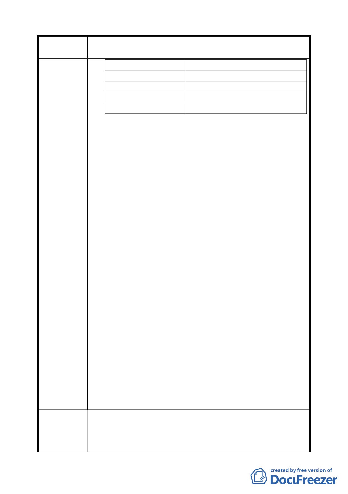

案 名 變更臺北市南港區南港路以南、縱貫鐵路以北南港輪胎工廠
及附近土地工業區為特定專用區主要計畫案
平均失業週數
38.5 週
目前就業狀況
失業 70.96%；就業 29.04%
離職前平均月收入 38,745.3 元
再就業後平均月收入 27,113.2 元
薪資平均降幅
30.02%
南港輪胎公司送交北市都發局之本開發案不論「主要計
劃」或「細部計劃」，皆未提及協助原有員工之再僱用或
再就業等具體方案。
五、缺乏老員工參與的勞動文化保存
勞動文化資產不僅記載勞工的集體記憶，更是社會的資
產，不應因為土地開發而被摧毀遺棄。南港輪胎公司於主
要計畫書「陸、規劃原則與構想」中表示：「南港輪胎工
廠之煙囪經結構技師鑑定為危險建築物，惟因屬台北市登
錄在案之歷史建築，擬保留基座，以作為未來之展示或印
象保存，並遷至鄰近公園綠地或開放空間，以保留地區發
展之歷史印象，且在該煙囪處理之前將其動態保留計畫送
台北市政府備查。」本會曾與士紙工會共同協同參與士紙
開發案對於公園中勞動意象的設計規畫及老煙囱的保存
工作，深知缺乏老員工的參與、僅僅是文物的保存，該文
物所具備的勞動歷史文化價值難以被突顯浮現，勞動文化
資產不僅記載勞工的集體記憶，更是社會的資產，不應因
為土地開發而被任意處置。南港輪胎老煙囱已為南港區地
標，目前已為歷史建築，可惜的是，在主要計畫書中，並
未見到南港輪胎公司的動態保留計畫，我們希望其動態計
畫應禮聘老員工共同規畫，找回該廠內工作的老員工的記
憶及情感，並且採集老員工口述故事。
都計單位與勞工局應重視保存勞動活文化的人文資產，除
了煙囱之外，南港輪胎公司南港廠是台灣第一家的輪胎
廠，更是台北市的唯一，建議於本廠基地或規劃的育樂中
心中設立「輪胎/橡膠製造紀念館」，體現傳統產業在台北
市發展的軌跡，將各項具有歷史意義的文物或建築物、重
點生產設備等保存下來，甚至讓資深的勞工來擔當解說
員，亦可表彰北市府重視勞動產業的具體表現。
1.南港輪胎公司應針對員工安置事項，與工會簽訂團體協約，
建議辦法
納入主要計畫書中。
說明：南港輪胎公司應比照「土地開發勞工權益保護自治
條例」之相關規定，針對員工安置事項，與工會簽訂「勞
二〇